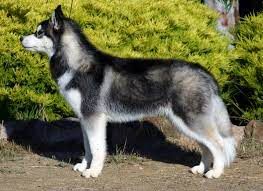

Beagle
Estos perros robustos y atrevidos son afables, además de compactos
y atléticos. Tienen un pelaje corto, denso, resistente a las inclemencias
del clima y se presenta en varios colores y patrones.

Husky
El husky siberiano tiene las orejas erguidas y los ojos de marrones a azules o también dispares.
Lleva el cuello recto y la línea superior está nivelada. Tienen un pelo muy denso y afelpado con
una importante capa interna..